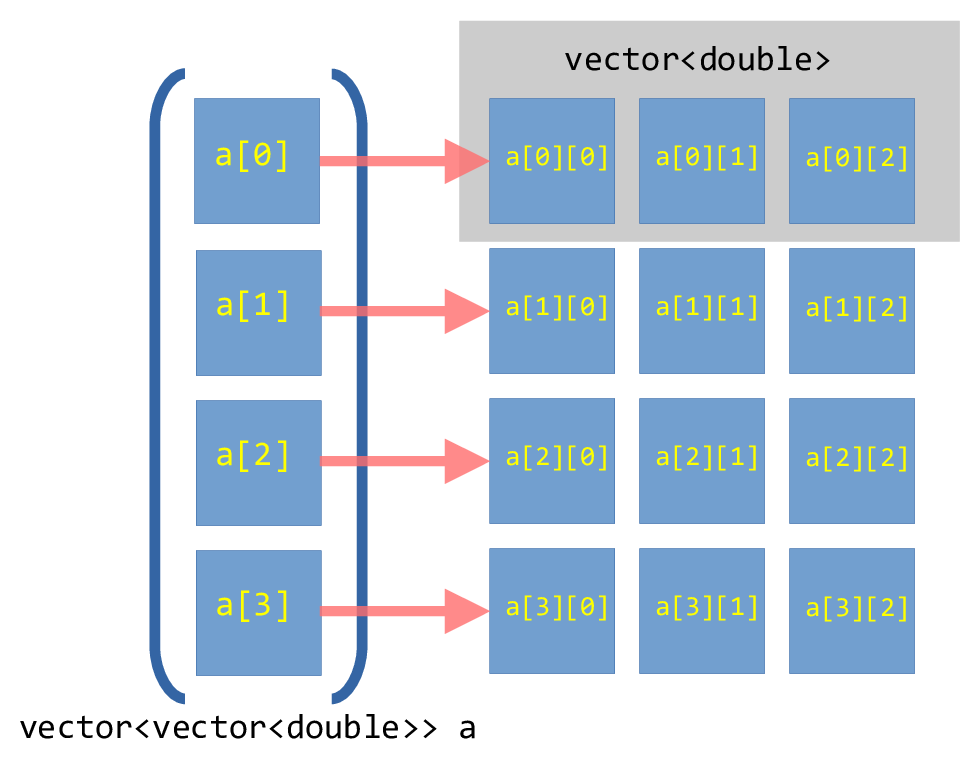
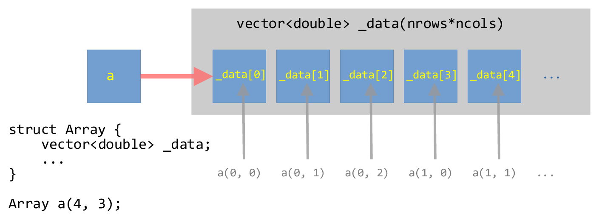

Example: Multidimensional Contiguous Array#
A common data-structure in scientific computing is a multidimensional array. For example, a mathematical matrix is best represented by a two-dimensional array. We want to look at some of the ways we can do this in C++.
Note
Unlike some languages (like Fortran, python w/ NumPy), C++ does not
have a multidimensional array in its standard library. This will
improve in C++23 with the introduction of std::mdspan. In a future
standard (C++29?), another object, std::mdarray may be
included.
vector-of-vector’s#
If we consider:
std::vector<std::vector<double>> array_2d;
Then this is creating a 1-d array that corresponds to the rows of our array, where each element of this is a separate vector to store the columns that make up that row.
This can be visualized as:
{kind=link}

Fig. 11 Illustration of a vector-of-vector’s for a \(4\times
3\) array.#
However, each of these row vectors are independent, and can be in very disparate positions in memory.
We want an array where all the elements are stored contiguously in memory.
array-of-array’s#
We could alternately do an array-of-arrays using std::array. In this case,
we need to know the size of the array ahead of time. Here’s an example that creates
a 3×4 array (3 rows by 4 columns):
#include <iostream>
#include <array>
#include <format>
int main() {
// create an array with 3 rows, each with
// 4 columns
std::array<std::array<double, 4>, 3> M{};
double val{0.0};
for (auto &r : M) {
for (auto &c : r) {
c = val++;
}
}
for (auto r : M) {
for (auto c : r) {
std::cout << std::format("{:4} ", c);
}
std::cout << std::endl;
}
}
The downside of this is that we need know how big our array is at compile-time. This is not always possible. However, this type of array is guaranteed to be contiguous in memory.
Caution
The older C-style way to create an array like this is:
double M[3][4];
but this should not be used. When passing to a function, it behaves like a pointer, and the size information is lost. This makes it less convenient to work with.
Contiguous multi-dimensional array#
Our goal now is to create a contiguous memory space that stores all the elements of the 2-d array. Further, we want to be able to specify the size at runtime, instead of compile-time.
To make a contiguous vector, we will use a single vector
dimensioned with a size of nrows * ncols.
Note
We have a choice to make—how do we unravel the multidimensional structure into a one-dimensional space? There are two options: row-major and column-major ordering:

In row-major storage, the elements of each row are next to each other in memory, and after one row begins the next. In column-major ordering, the elements of a column are next to each other in memory. Most languages default to row-major ordering, so that’s what we’ll use.
We will overload the () operator to allow for us to index
into this one-dimensional buffer as a(nrow, ncol).
This can be visualized as:
{kind=link}

Fig. 12 Illustration of a one-dimensional vector wrapped in a struct that can be
indexed as a two-dimensional array.#
Implementation#
We will implement the main struct in a header so we can reuse this
#ifndef ARRAY_H
#define ARRAY_H
#include <vector>
#include <iostream>
#include <cassert>
// a contiguous 2-d array
// here the data is stored in row-major order in a 1-d memory space
// managed as a vector. We overload () to allow us to index this as
// a(irow, icol)
struct Array {
int _rows;
int _cols;
std::vector<double> _data;
Array (int rows, int cols, double val=0.0)
: _rows{rows},
_cols{cols},
_data(rows * cols, val)
{
// we do the asserts here after the initialization of _data
// in the initialization list, but if the size is zero, we'll
// abort here anyway.
assert (rows > 0);
assert (cols > 0);
}
// note the "const" after the argument list here -- this means
// that this can be called on a const Array
inline std::size_t ncols() const { return _cols;}
inline std::size_t nrows() const { return _rows;}
inline double& operator()(int row, int col) {
assert (row >= 0 && row < _rows);
assert (col >= 0 && col < _cols);
return _data[row*_cols + col];
}
inline const double& operator()(int row, int col) const {
assert (row >= 0 && row < _rows);
assert (col >= 0 && col < _cols);
return _data[row*_cols + col];
}
};
// the << operator is not part of the of the class, so it is not a member
inline
std::ostream& operator<< (std::ostream& os, const Array& a) {
for (std::size_t row = 0; row < a.nrows(); ++row) {
for (std::size_t col = 0; col < a.ncols(); ++col) {
os << a(row, col) << " ";
}
os << std::endl;
}
return os;
}
#endif
Some comments on this implementation:
We need to order things in the initialization-list in the same order they appear as member data in the class.
We include the
_datavector in the initialization-list without worrying about if its size is zero—theassertin the function body do that for us.We have two member functions for the
()operator. The first is for the case of a non-constdeclaredArrayand the second is for aconstdeclaredArray.
Here’s a test program for the Array object. Notice that we gain
access to the Array class via #include "array.H".
#include <iostream>
#include "array.H"
int main() {
Array x(10, 10);
for (std::size_t row=0; row < x.nrows(); ++row) {
for (std::size_t col=0; col < x.ncols(); ++col) {
if (row == col) {
x(row, col) = 1.0;
}
}
}
std::cout << x << std::endl;
Array y(4, 3);
double c{0};
for (auto &e : y._data) {
e = c;
c += 1;
}
std::cout << y << std::endl;
// this will fail the assertion
//std::cout << x(11, 9);
}
Notice a few things:
When we loop over the elements of the
Arraywe get the number of rows via.nrows()and the number of columns via.ncols(). Technically these are of typestd::size_t(which is some form of anunsigned int).For
Array y, we use a range-for loop over the elements of_datadirectly—this is the one-dimensional representation of our array. We can do this because the data is stored contiguously.Note though—this breaks the idea of encapsulation in a class, since we are accessing this data directly.
When we try to index out of bounds, the
assertstatements catch this.
Here’s a makefile that builds this test program + a few others that we’ll compare with.
# get all the sources and the headers
HEADERS := $(wildcard *.H)
SOURCE := test_array.cpp
# create the list of objects by replacing the .cpp with .o for the
# sources
OBJECTS := $(SOURCE:.cpp=.o)
# by default, debug mode will be disabled
DEBUG ?= FALSE
ifeq (${DEBUG}, TRUE)
OPTS += -g
else
OPTS += -DNDEBUG -O3
endif
# general rule for compiling a .cpp file to .o
%.o : %.cpp ${HEADERS}
g++ ${CXXFLAGS} ${OPTS} -c $<
# the test_array program -- we need to explicitly include
# test_array.o here
test_array: ${OBJECTS}
g++ -o $@ ${OBJECTS}
# 'make clean' will erase all the intermediate objects
clean:
rm -f *.o test_array
Note
The GNUmakefile has some helpful features. To just
build as is, we can do:
make
If we instead want to turn on the assert’s, then we do:
make DEBUG=TRUE
To force a rebuild, we can do:
make clean
make
The assert’s are handled by the C++ via the NDEBUG preprocessor
directive, so setting -DNDEBUG tells the preprocessor to turn
off the asserts.
This GNUmakefile is a little more complex than the previous ones
we looked at, since there are several possible targets defined. The first
target, test_array in this case, is the default. The other two targets
will be discussed below.
try it…
What would we need to change if we wanted to make this a class
instead of a struct?
Some things to consider:
Putting the
operator()functions inarray.Hgives the compiler the opportunity to inline them. This can have a big performance difference compared to putting their implementation in a separate C++ file.The
std::array<std::array<>>is allocated on the stack, and we can quickly exceed the stack size. Meanwhile, theArrayclass holds the data on the heap.In our
GNUmakefile, we have one additional feature—we are compiling with optimization via-O3. Look to see how the performance changes if we do not optimize.